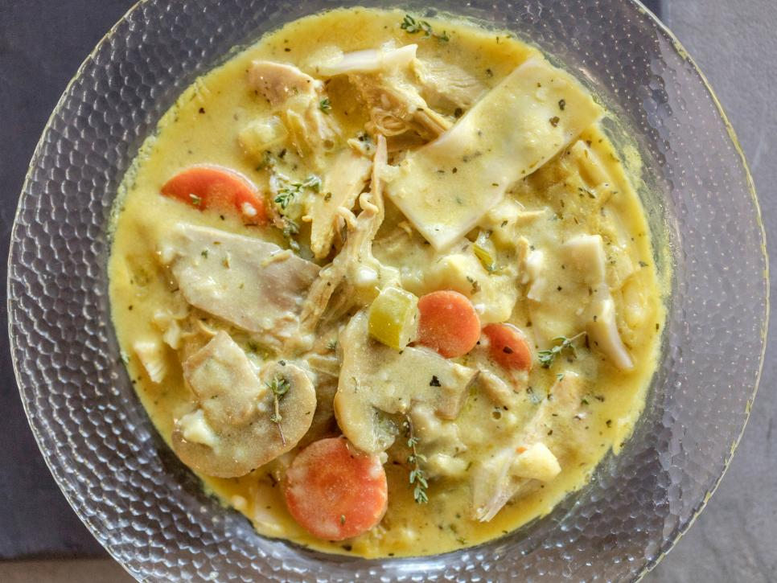

Mississippi Style Chicken & Dumplings

Description
It took me a while to dial this one in just right. I had a memory somewhere in the back of my mind from my Mississippi upbringing of the perfect bowl of chicken n dumplings. The "drop" style dumplings some folks cook are just not my bag at all. I wanted noodly dumplings, but thicker and a bit chewier. I finally discovered that pie crust is the secret to making the dumplings of my dreams. If you're hardcore you can make your own, but I like the Pillsbury brand refrigerated roll-up crusts a whole lot. This recipe calls for 1 roll, but you really don't need quite that much unless you're feeding a lot of mouths. You can also stretch this recipe to be larger and use 2 rolls of pie crust, of course....
Ingredients
- 2 32 oz. containers of chicken broth
- 1 roll Pilsbury refrigerated pie crust
- 3 stalks celery, chopped
- 1 yellow onion, chopped
- 2 cups whole milk
- 1 cup heavy cream (optional for heartiness)
- 1 whole chicken
- Salt and pepper to taste
- Poultry seasoning to taste
- 1/4 cup corn starch for thickening, if desired
Directions
- In large soup pot, place broth, onions, celery and whole chicken and bring to boil. Once boiling, lower heat to simmer and cook until chicken is falling apart.
- Remove chicken to large bowl and set aside to cool.
- Use colander to strain veggies out of broth. Return broth to soup pot and bring back to boil uncovered. Be careful not to let broth boil too long or liquid will reduce in volume and you may need to add more broth later.
- While broth is heating, unroll pie crust onto cutting board and cut into 1/2 to 1/4 inch wide 1 inch long strips.
- Carefully drop pie crust strips into boiling broth and cook at rolling boil for 3-4 minutes.
- Lower heat to med-low, return veggies to pot and simmer.
- Once chicken is cool enough to handle, remove white meat and shred with fork. Add shredded meat back to pot and stir.
- Add milk and heavy cream and stir with whisk until completely blended.
- Add seasonings to taste.
- If desired, mix corn starch and equal amount warm water and add to pot to thicken liquid.
Other Recipes by Jamie